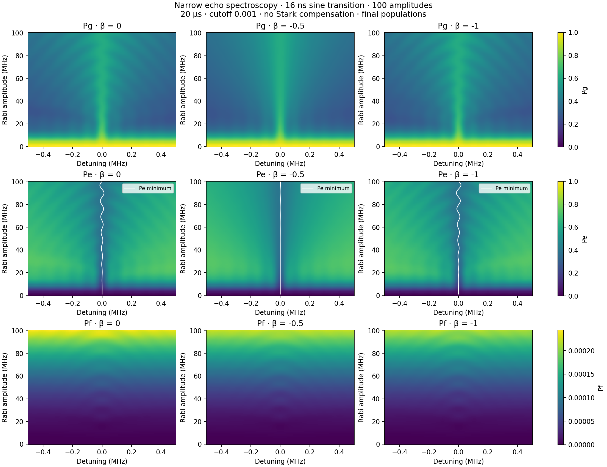
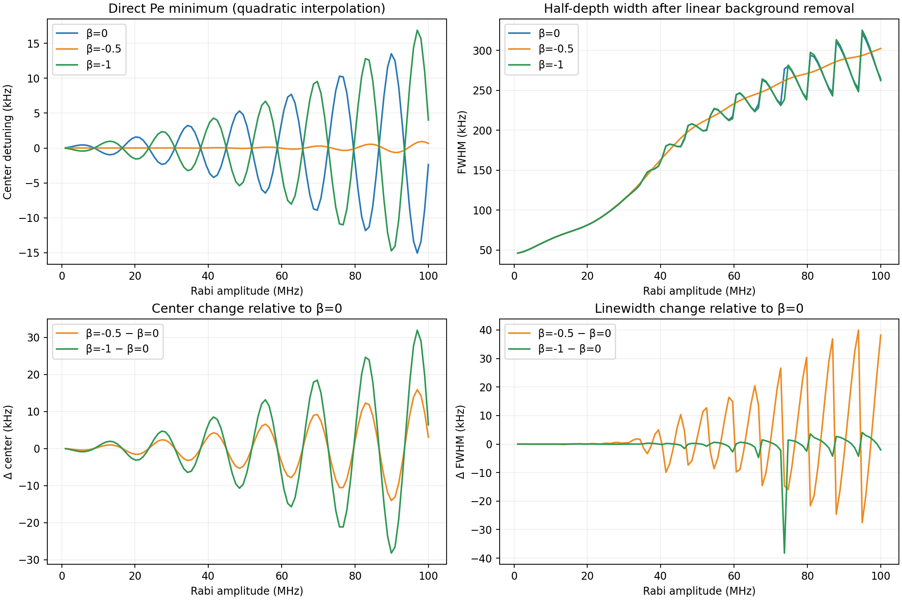
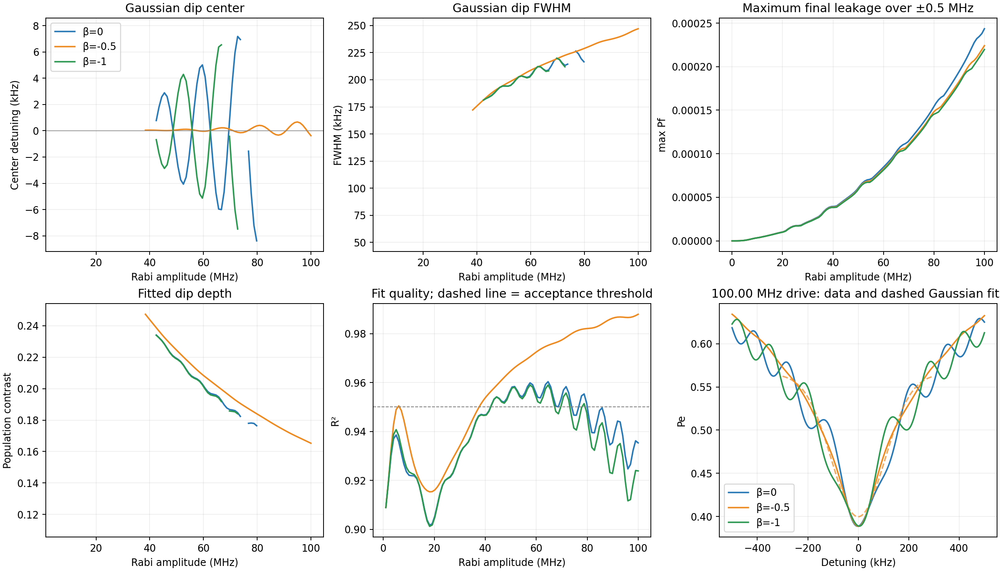
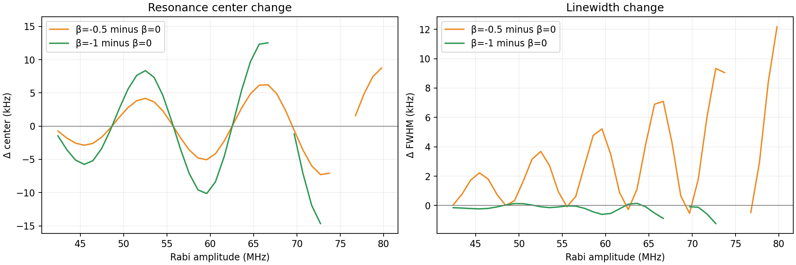
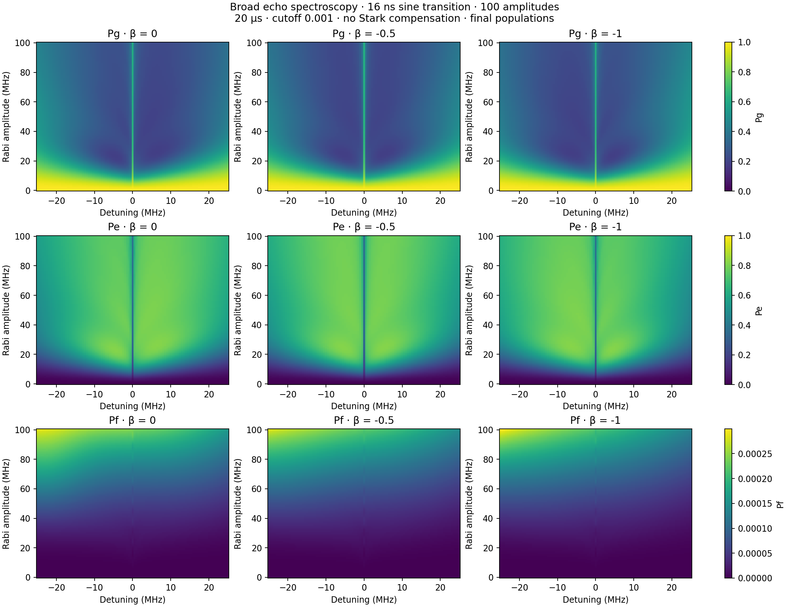

100 amplitude points over the extended range (0–100 MHz). 20 µs pulse, cutoff 0.001, T1=51.24 µs, T2=7.31 µs, α=−216 MHz. Identical I envelopes; no Stark compensation. All results are simulated final populations. White map curves show directly located Pe minima.
The direct comparison uses the raw Pe minimum, refined quadratically, and a half-depth width after subtracting a linear background fitted to |detuning| ≥ 0.4 MHz. This operational width depends on the chosen background. No smoothing is applied.
The additional Gaussian center and linewidth use a Gaussian fit to Pe over ±0.3 MHz, with one-bin smoothing. Poor, weak, unresolved and clipped fits are omitted. The fit-quality plot and example fits expose deviations from a Gaussian shape.
| β | Pe minimum (kHz) | Half-depth width (kHz) | Max final Pf over narrow map (%) |
|---|---|---|---|
| 0 | -2.38 | 264.09 | 0.02435 |
| -0.5 | 0.66 | 302.30 | 0.02241 |
| -1 | 4.02 | 262.03 | 0.02197 |
These high-drive values are one slice of the amplitude-dependent curves below.
Direct center/linewidth CSV · Gaussian fits CSV · Parameters and convergence






{
"parameters": {
"duration_us": 20.0,
"t1_us": 51.24,
"t_phi_us": 7.871480508563624,
"anharmonicity_mhz": -216.0,
"cutoff": 0.001,
"order": 0.5,
"echo": true,
"echo_transition_shape": "sine",
"drag_beta": 0.0,
"stark_kappa_mhz_inv": 0.0,
"echo_transition_us": 0.016
},
"betas": [
0.0,
-0.5,
-1.0
],
"amplitude_points": 100,
"amplitude_range_mhz": [
0.0,
100.0
],
"dt_ns": 0.5,
"summary": [
{
"beta": 0.0,
"max_final_pf": 0.00024350070032365894,
"accepted_fits": 36,
"high_drive_fit": {
"center_hz": 11354.251503900634,
"fwhm_hz": 229435.06938062955,
"center_error_hz": 2200.340577433778,
"fwhm_error_hz": 8274.67850128407,
"r_squared": 0.9353368845588406,
"contrast": 0.1566948482766037,
"accepted": false
},
"high_drive_direct": {
"center_hz": -2378.781902346712,
"fwhm_hz": 264086.39251939545,
"contrast": 0.2199801472158911,
"accepted": true
},
"max_population_error": 5.945051620659392e-06,
"max_checked_direct_center_error_hz": 1.6177770578224226,
"max_checked_direct_fwhm_error_hz": 5.051423244469333,
"max_checked_center_error_hz": 0.003501983685509913,
"max_checked_fwhm_error_hz": 0.06475847185356542
},
{
"beta": -0.5,
"max_final_pf": 0.00022406996317873525,
"accepted_fits": 63,
"high_drive_fit": {
"center_hz": -374.83762174172773,
"fwhm_hz": 246995.79027752133,
"center_error_hz": 948.3278538351029,
"fwhm_error_hz": 3951.155451204799,
"r_squared": 0.9879026472100079,
"contrast": 0.1652610488166028,
"accepted": true
},
"high_drive_direct": {
"center_hz": 656.1072317625977,
"fwhm_hz": 302303.3648816659,
"contrast": 0.23138413306665628,
"accepted": true
},
"max_population_error": 5.3267849732252515e-06,
"max_checked_direct_center_error_hz": 0.18410984587217172,
"max_checked_direct_fwhm_error_hz": 5.381397690915037,
"max_checked_center_error_hz": 0.5298219432538005,
"max_checked_fwhm_error_hz": 3.164536130934721
},
{
"beta": -1.0,
"max_final_pf": 0.00021968655175860538,
"accepted_fits": 30,
"high_drive_fit": {
"center_hz": -12302.753314592492,
"fwhm_hz": 225212.33064136666,
"center_error_hz": 2385.21141306163,
"fwhm_error_hz": 8772.394061070998,
"r_squared": 0.9238786445808291,
"contrast": 0.15479737406338592,
"accepted": false
},
"high_drive_direct": {
"center_hz": 4016.060326183693,
"fwhm_hz": 262033.53955533172,
"contrast": 0.21743743449097064,
"accepted": true
},
"max_population_error": 6.50090341858256e-06,
"max_checked_direct_center_error_hz": 1.882659747168418,
"max_checked_direct_fwhm_error_hz": 5.98178884855588,
"max_checked_center_error_hz": 0.006240308915494097,
"max_checked_fwhm_error_hz": 0.04015852033626288
}
],
"source_runs": {
"broad": "2026-08-25/six_detuning_amplitude_sweeps/03_broad_50mhz_cutoff_0p005_echo",
"narrow": "2026-08-25/six_detuning_amplitude_sweeps/06_narrow_1mhz_cutoff_0p005_echo"
},
"convention": "I=L*s, no renormalization; Q=-beta*dI/dt/(2*pi*abs(alpha)); drive=I-iQ",
"direct_metrics": "Center: raw Pe minimum refined quadratically. Width: nearest half-depth crossings after subtracting linear background fitted on |detuning|>=0.4 MHz; finite-window operational width.",
"fitting": "Pe Gaussian dip on \u00b10.3 MHz after 1-bin Gaussian smoothing; FWHM=2sqrt(2ln2)*sigma. Require R2>=0.95, depth>=0.001, FWHM>=15 kHz, and both half-depth points inside fit window. Zero drive excluded. No uncertainty from fit covariance is interpreted as physical uncertainty.",
"caveat": "Final Pf, not transient peak leakage; three-level Markovian simulation. Fitted center and FWHM describe the Gaussian approximation, not necessarily the exact minimum or literal half-depth width."
}Halving spacing from 5 to 2.5 kHz at selected β=−0.5 amplitudes changed the center by at most 1.851 Hz and width by 46.7 Hz.